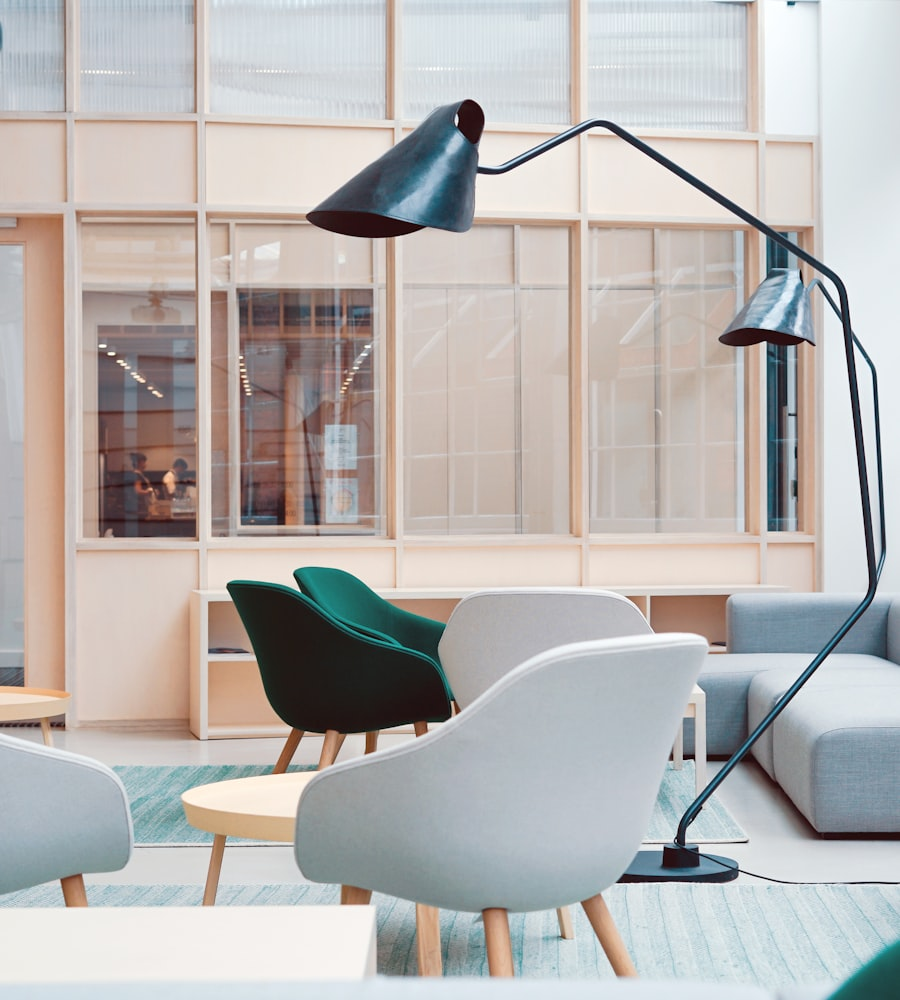
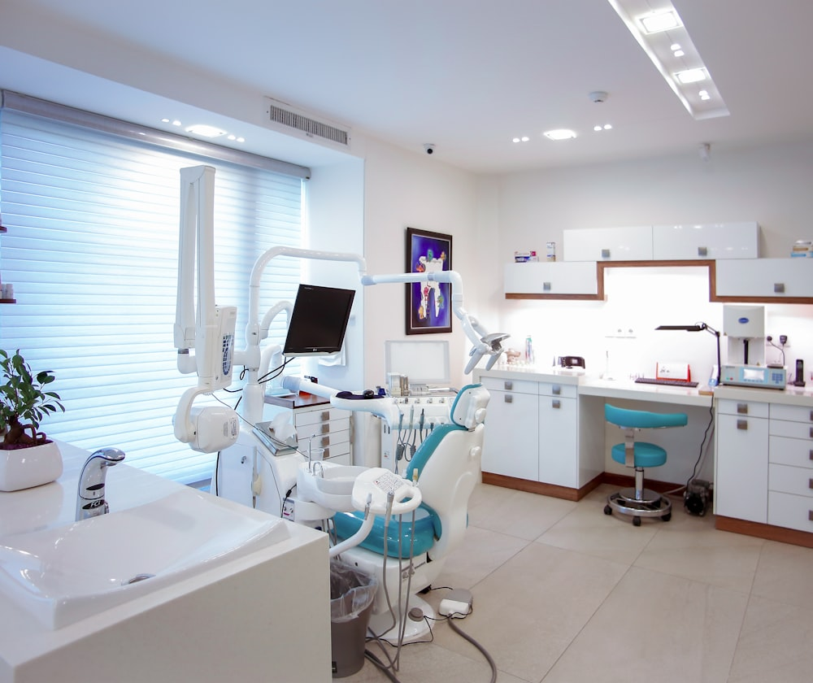
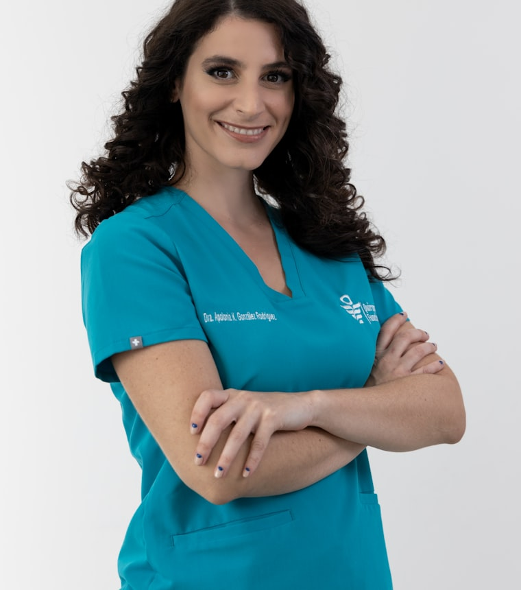

Zahnmedizin, bei der man sich zur Abwechslung entspannt.
Wir nehmen uns Zeit, erklären jeden Schritt und drängen zu nichts. Für alle, die den Zahnarzt bisher lieber verschoben haben.

Was wir für Ihre Zähne tun.
Von der Vorsorge bis zum festen Zahnersatz, alles an einem Ort. Und immer erst die Erklärung, dann die Behandlung.
Prophylaxe & Vorsorge
Gründliche Reinigung, die spätere Behandlungen oft ganz überflüssig macht.
Zahnerhalt
Zahnfarbene Füllungen und Wurzelbehandlungen, so schonend wie möglich.
Implantate & Zahnersatz
Fester Ersatz, der aussieht und sich anfühlt wie die eigenen Zähne.
Ästhetik & Bleaching
Unsichtbare Schienen und sanftes Aufhellen, ohne Versprechen ins Blaue.
Kinderzahnheilkunde
Geduldig und ohne Druck, damit Ihre Kinder gern wiederkommen.

Moderne Technik, in einer Praxis, die nicht nach Praxis riecht.

Ich behandle so, wie ich selbst behandelt werden möchte.
Seit vielen Jahren bin ich mit ganzem Herzen Zahnärztin. Mir ist wichtiger, dass Sie verstehen, was los ist, als dass wir schnell fertig werden.
Keine Panikmache, keine Behandlung, die nicht sein muss. Und für alle, die mit einem mulmigen Gefühl kommen, nehmen wir uns die Zeit, die es eben braucht.
Ich habe den Zahnarzt jahrelang aufgeschoben. Hier hat mir zum ersten Mal jemand in Ruhe erklärt, was Sache ist, ohne mich zu drängen. Ich gehe inzwischen sogar gern hin.